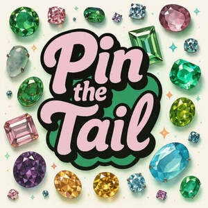

Trade Mark Journal No.2025/044 31 October 2025
UK00004275230 8 October 2025 (26,35,41,42)

- Class 26
- Hair twisters [hair accessories]; Twisters [hair accessories]; Claw clips [hair accessories]; Hair ornaments, hair rollers, hair fastening articles, and false hair; Feathers [clothing accessories]; Hair barrettes; Hair scrunchies; Brooches [clothing accessories]; Hair tassel ornaments for Japanese hair styling (negake); Ornaments (Hair -); Ornaments for the hair; Bows for the hair; Hair bows; Hair ribbons for Japanese hair styling (tegara); Hair tassel strings for Japanese hair styling (motoyui); Hair decorations; Sticks for use in styling the hair; Tresses of hair; Hair ornaments in the nature of hair wraps; Hair pieces; Hair clips; Birds' feathers [clothing accessories]; Birds' feathers as clothing accessories; Plaits of hair; Hair elastics; Buckles [clothing accessories]; Hair buckles; Hair curlers; Tabodome [hair pins for fixing back-hairpieces for use in Japanese hair styling]; Bridal headpieces in the nature of ornamental hair combs; Hair pins; Pins for the hair; Ponytail holders and hair ribbons; Hair coloring caps; Hair rollers; Plaited hair; Hair (Plaited -); Ornamental combs for Japanese hair styling (marugushi); Fibres for use as replacement hair; Hair ornaments; Hair ribbons; Ribbons for the hair; Ornamental hair pins for Japanese hair styling (kogai); Hair (Tresses of -); Hair tresses; Decorative articles for the hair; Hair fasteners; Hair extensions; Waving pins for the hair; Hair weaves; Snap clips [hair accessories]; Ostrich feathers [clothing accessories]; Hair ornaments in the form of combs; Clam clips for hair; Barrettes; Hair ornaments [not of precious metal]; Pins, other than jewelry; Hair pins and grips; Paper bows [hair decorations]; Paper ribbons [hair decorations]; Ornamental ribbons made of textiles; Beads other than for making jewelry [haberdashery]; Hat ornaments, not of precious metal; Ornaments (Hat -), not of precious metal; Beads, other than for making jewelry; Ceramic beads, other than for making jewelry; Beads, other than for making jewellery; Spangles for decoration, not of precious metal; Glass beads, other than for making jewelry; Synthetic hair; Hair wraps; Hair netting; Hair bands; Bands for the hair; Bands (Hair -); Hair slides; Hair nets; Nets (Hair -); Hairpieces for Japanese hair styling [kamishin]; Braids; Scrunchies; Hairbands; Elasticated hair ribbons; Ponytail holders; Elastic for tying hair; Hairpieces; Wigs; Braid; Barrettes [hair-slides]; Elasticated hair bands; Wigs for wear; Human hair; Buckles of precious metal [clothing accessories]; Tinsels [trimmings for clothing].
- Class 35
- Retail services relating to jewelry; Retail services in relation to jewellery; Mail order retail services for clothing accessories; Online retail services relating to clothing; Online retail services relating to jewelry; Retail services in relation to hair products; Online retail store services relating to clothing; Online retail store services in relation to clothing; Retail services in relation to fashion accessories; Mail order retail services connected with clothing accessories; Retail services connected with the sale of clothing and clothing accessories; Retail services in relation to clothing accessories; Online retail store services relating to cosmetic and beauty products.
- Class 41
- Arranging of workshops and seminars; Conducting workshops and seminars in art appreciation; Conducting of workshops and seminars in art appreciation; Training services relating to design.
- Class 42
- Design of fashion accessories; Fashion design; Design of clothing accessories; Design of clothing; Jewelry design; Design of jewellery; Design of clothing, footwear and headgear; Fashion design consulting services; Furniture design; Clothing design services; Design services for clothing; Design of stationery; Design of costumes; Styling [industrial design]; Dress design; Design of products; Design of interior decor for shops; Design of protective clothing; Interior design services for boutiques; Jewellery design services; Design of models; Design of interior decor; Interior decor design; Decor (Design of interior -); Design of headgear; Automotive design; Dress design services; Shop interior design; Shop design; Interior design; Design of packaging; Design of shops; Design of engineering products; Design of interior decoration; Interior decorating design; Design for others in the field of clothing; Furnishing design services for the interiors of automobiles; Designing of clothing; Brand design services; Design of industrial products; New products (Design of -); Design of prostheses; Design and development of multimedia products; Textile design services; Graphic art design; Design services relating to shop interiors; Visual design; Packaging designs; Design of artwork; Industrial art design; Graphic design; Hat design; Design and development of consumer products; Industrial and graphic art design; Design of tools; Design and graphic arts design for the creation of web sites; Design services (Packaging -); Design services for packaging; Packaging design services; Design (Graphic arts -); Graphic arts design; Design and development of new products; Illustration services (design); Commercial art design; Custom design services; Pattern design; Design and development of industrial products; Design of prototypes; Design services; Design services for art-work; Footwear design services; Design services for furniture; Product design and development.
Pin The Tail Accessories Ltd